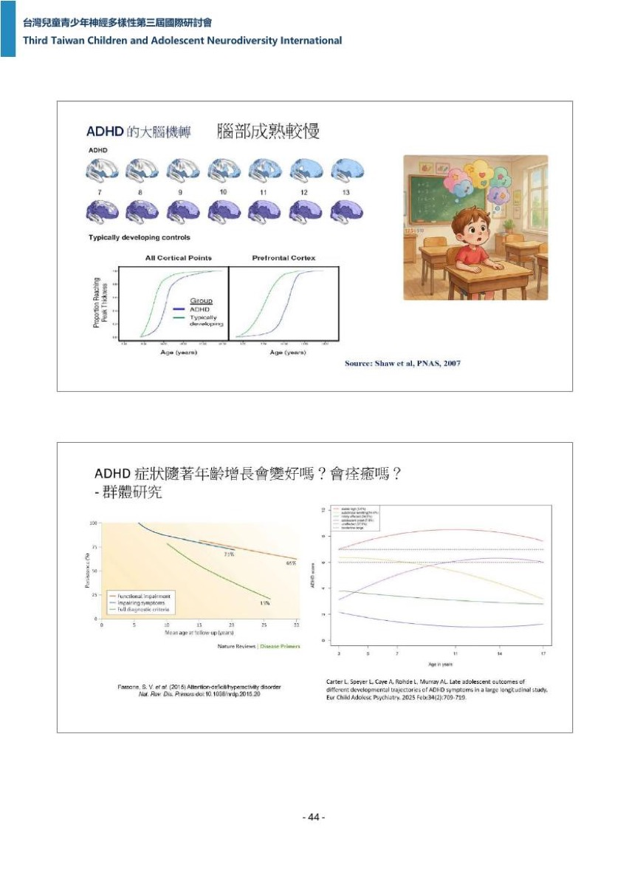
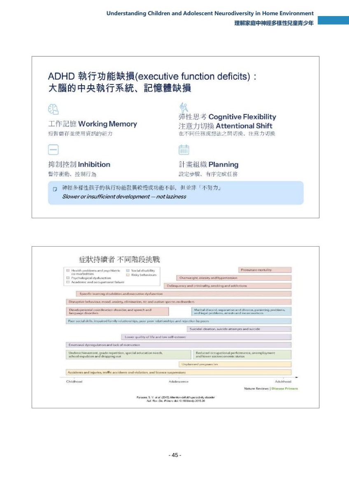
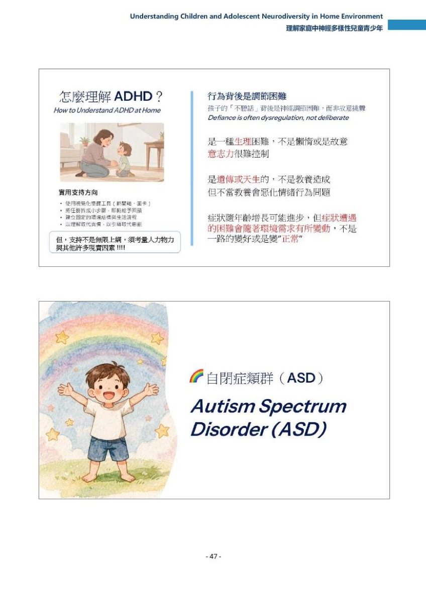
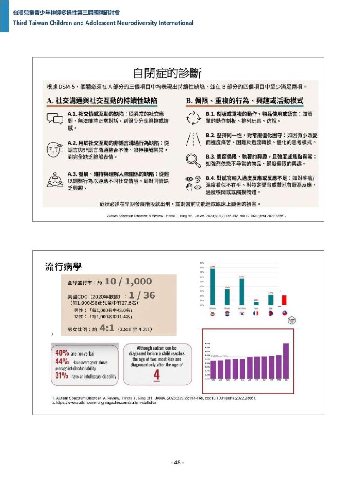
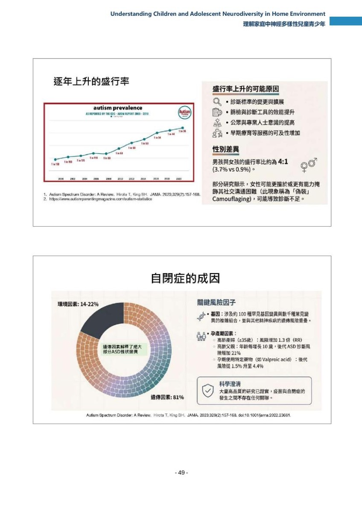
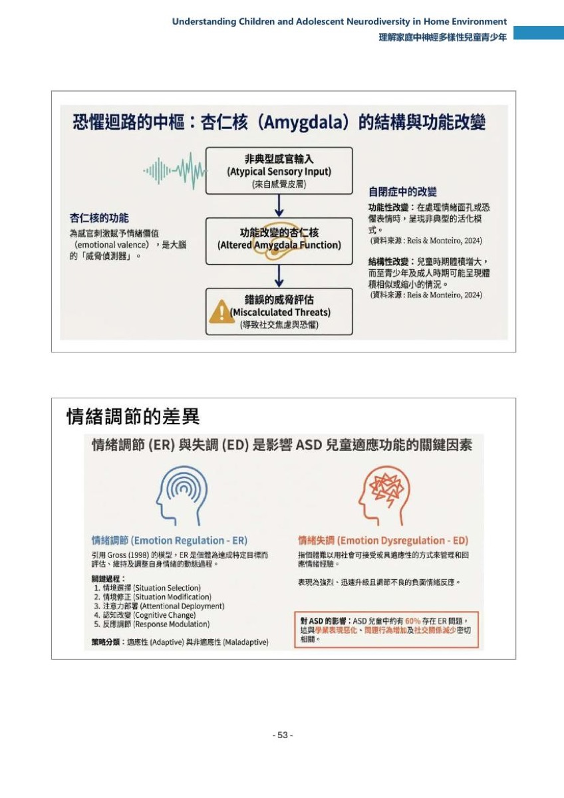
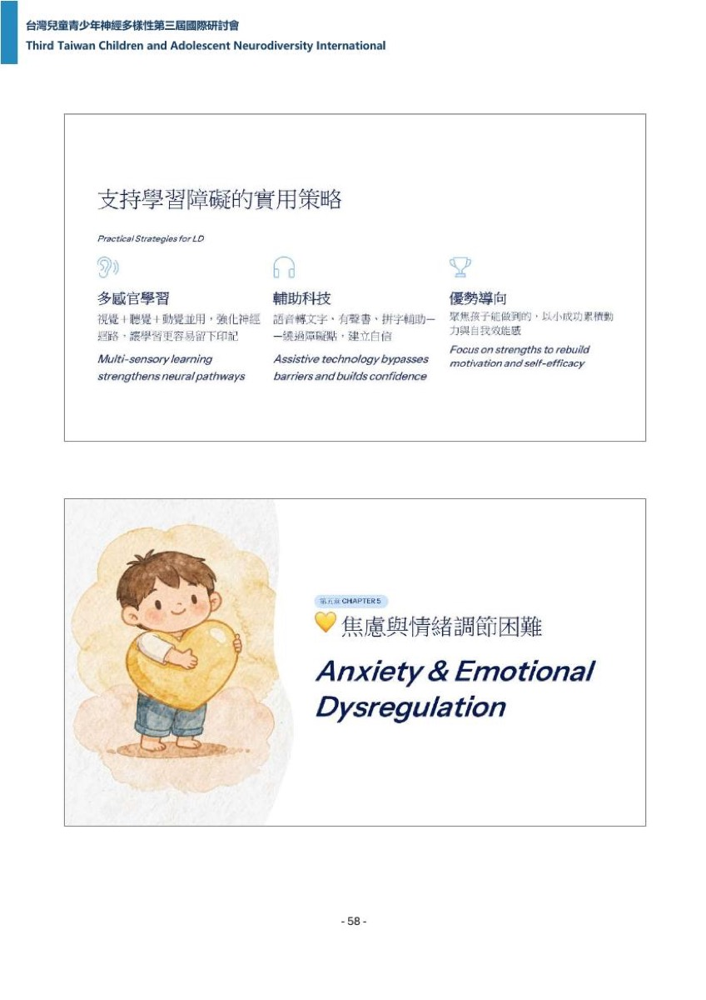
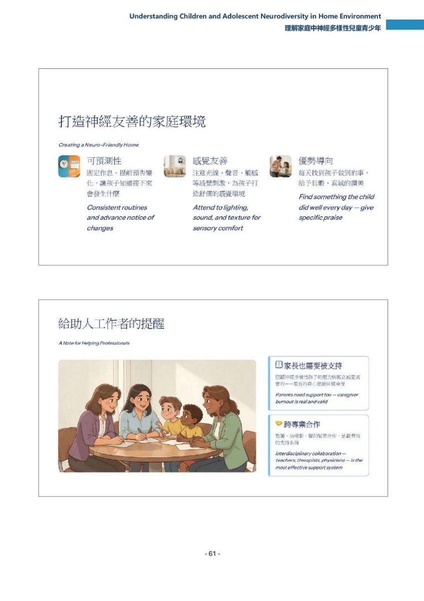
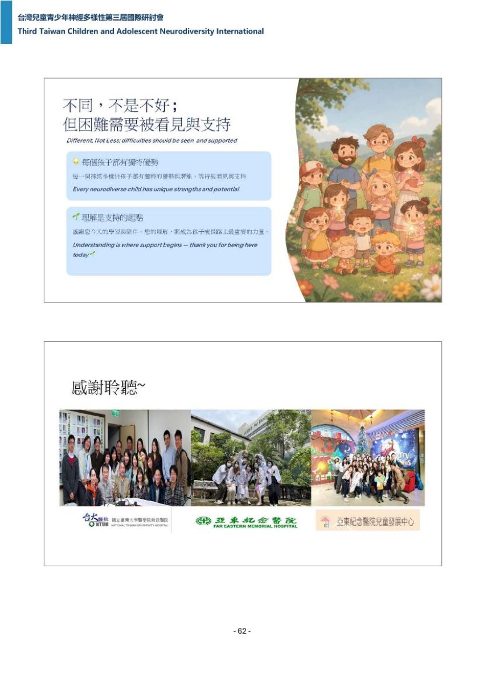

Understanding Children and Adolescent Neurodiversity in Home Environment
理解家庭中神經多樣性兒童青少年
本段錄音（講者本人 00:00:00–00:23:08）不是講題開頭，從心理衡鑑報告與 CPT 的侷限談起。
頁面內常見標記：【推論】／【推定】＝記錄者依現有資料的推測，不是講者原話；（口譯）＝現場口譯員的中文，不是講者本人的話；【校正】＝逐字稿明顯聽錯、記錄者改用正確寫法但保留原始聽寫。
要點
- 診斷歷程重視質性觀察甚於單一測驗數字：CPT 於輕微或高智商個案常呈正常值，與心理師實際行為觀察落差大 [00:00:35]；明顯個案門診當下即可診斷，仰賴三方觀察一致性——[00:01:41]「尤其是老師和新班老師、家長自己都這樣覺得」（新班老師為逐字稿原詞，是否為導師之口誤或聽寫誤差未證實，見待確認#15）。[00:01:34]
- 去疾病化氛圍下的藥物治療必要性：部分兒童不服藥則連職能治療、日常生活配合都有困難——[00:02:08]「有些小孩子不讓他吃藥」[00:02:10]「真的是舉步難行」。
- ADHD 盛行率 5-10% 且有上升趨勢，歸因都市化、3C 使用增加、覺察度提升（含融合教育使教師敏感度提高）三項。（p-044.jpg 上半）[00:03:06]
- 教師因團體對照而較易覺察異常行為，家長因家中子女少、缺乏對照基準而較難自行判斷。[00:03:43]
- 額葉／前額葉成熟時間比一般兒童可能延遲 2 到 5 年（講者原話自帶可能一詞，逐字見五節數字表），為 ADHD 兒童行為顯得幼稚、不顧後果的生理基礎推測。p-045.jpg 上半印有皮質厚度達峰圖（出處逐字「Source: Shaw et al, PNAS, 2007」），惟未印 2-5 年此數值，引用前須查原始文獻。[00:05:47]
- 症狀嚴重度隨年齡呈現不同軌跡（持續高症狀組／逐漸緩解組／中高年級學業要求提高才浮現組）；成人可藉職業選擇自行調節環境使症狀較不顯著，兒童因就學義務無從選擇環境。（p-045.jpg 下半，Carter et al., 2025）[00:07:02][00:07:29]
- 講者以電腦處理器比喻前額葉的執行功能角色——[00:09:34]「我們的前河夜」〔疑為前額葉，見待確認#16〕[00:09:35]「是我們的CPU啦」[00:09:36]「就是我們大腦的處理系統」；提升執行功能以藥物最快，另有運動、認知策略訓練、結構化環境訓練等輔助方式 [00:10:36]–[00:10:48]。
- 講者逐項以神經科學解釋外顯行為（區段 00:13:31–00:15:10，v1 時戳誤植約差 3 分鐘，v2 已修正）：hyper focus 致 [00:13:47]「會選擇性失聰」，非工作記憶問題；惟講者另指出部分情形確為刻意 [00:13:59]「那有些當然是故意的啦」，故不應一概標為非故意；工作記憶差致難以多工、注意力一轉移即遺忘 [00:14:02]–[00:14:13]；講者指多巴胺不足致動機與驅力不足而顯得散漫，部分人轉而尋求刺激（飆車、從高處跳下）——[00:14:13]「然後他們常常多發胺不太夠」（多發胺為逐字稿聽寫，疑為多巴胺）—— [00:14:13]–[00:14:50]；物品雜亂，講者歸因於 [00:14:53]「而且他們其實沒有那個策略啦」[00:14:55]「他們不知道怎麼分類或怎麼放」，並指 [00:15:06]「那這個是一個身體的困難」[00:15:08]「它不是意志力可以控制的」。
- ADHD 大部分為天生遺傳而非教養造成（講者原話 [00:16:03]「大部分都不是」、[00:16:10]「大部分是天生」，非絕對句；惟不當教養會惡化行為表現）；早期辨識的目的在減少負面經驗累積——[00:17:10]「你知道這些小孩常常有很多micro trauma」[00:17:32]「會形述他後來的人格」〔疑為形塑〕[00:17:41]「然後讓他對自己很沒有自信」——而非僅為及早療育（[00:16:34] 講者指 ADHD 早期療育效果類化有限）。[00:15:58]
- ASD 盛行率上升、男女比約 4:1（與投影片 p-049.jpg「約4:1（3.8:1至4.2:1）」一致）；加州最常被診斷，講者推測與工程師群聚有關——[00:18:25]「因為那邊有很多系谷」〔疑為矽谷〕[00:18:29]「工程師就會互相結婚」[00:18:42]「然後系谷的工程師也比較有錢嘛」，並提及基因負荷較大。講者口述辨識率 [00:18:11]「現在好像三十二分之一」，與投影片印刷「美國CDC（2020年數據）：1/36」（p-049.jpg）不一致，見待確認#7。
- ASD 成因含常見基因變異與新生突變，與投影片 p-051.jpg 一致（印刷逐字「Inherited common variants 49.8%」「de novo variants 9.5%」「de novo CNVs：2.9%」「de novo SNVs (LGD)：6.6%」，出處 Huguet et al., The Genetics of Autism Spectrum Disorders, 2016；逐字稿將 de novo 聽寫為 DINOMO，見待確認#5）；ASD 兒童常見心智理論困難（p-051.jpg 下半「心智理論 Theory of Mind」），易預設對方已知其想法而省略脈絡說明，致溝通 [00:20:31]「你會覺得牛頭不對馬嘴」。[00:19:05][00:19:28]
- ASD 為光譜疾患：涵蓋高功能、社交上偽裝良好者——[00:21:20]「它偽裝的很好的那一種」[00:21:29]「它偽裝的非常好」，可能成年後才被發現——到低功能、非口語者；與投影片 p-055.jpg「如何理解ASD孩子 光譜上的每一個人，都是獨一無二的個體」一致。[00:21:14] 講者接著給出家庭可直接操作的支持原則（區段 00:21:55–00:22:11）——[00:21:55]「那就是要能夠預告啊接納」[00:22:01]「然後就要儘量結構化環境」[00:22:03]「然後環境的司機儘量弄得單純一點」〔司機疑為刺激，見待確認#19〕[00:22:05]「然後他們有些routine」[00:22:07]「如果沒有無傷大人」〔疑為無傷大雅，此為下句的前提條件，見待確認#20〕[00:22:09]「不見得需要硬把它改掉這樣子」——對應投影片 p-057.jpg 上半「支持ASD孩子的關鍵原則」（依手冊整理檔 A:101 逐字，含「預告與固定流程」）。
- 學習障礙：智力正常但特定學科（識字〔逐字稿作試字，見待確認#18〕／書寫／數學）有困難，診斷主責在校方特教系統，醫療端處理合併之 ADHD 治療（[00:22:27]「如果有公平ADHD」，公平疑為共病之聽寫錯誤，見待確認#17）[00:22:11]；講者另提 [00:22:32]「然後會有一些輔助策略的這樣」[00:22:38]「把他障礙的部分繞過去」，呼應投影片 p-059.jpg 上半「支持學習障礙的實用策略」（多感官學習／輔助科技／優勢導向）。
- 神經多樣性共病焦慮憂鬱四到五成：講者於 [00:22:40]「他們其實神經重要性裡面」〔疑為神經多樣性，見待確認#3〕、[00:22:43]「有40到50會有焦慮憂鬱的問題」兩句連說（ADHD／ASD／學習障礙三診斷名稱來自投影片標題、非講者當句字面），並提 [00:22:46]「他們常會用一些隱形的面貌」（投影片 p-060.jpg 上半印刷用語為「隱形面貌」）。逐字稿 [00:22:49] 出現「時間到了」（發言者未標示，非必然為主持人），講者隨即以三句話（見四節金句5）濃縮原定家庭支持投影片作結。本條與投影片 p-060.jpg「40-50%共病焦慮比例」大致相符，惟投影片僅載焦慮未含憂鬱，且投影片指名三診斷、講者口語泛稱神經多樣性。（投影片數字依手冊整理檔 B:29 逐字作 40-50%，圖檔印為 en dash。）
- 行為不可靠意志力控制——教室場景的論證（區段 00:15:10–00:15:58，為要點8 結論句的展開）：講者先轉述旁人常說的 [00:15:17]「你為什麼不能用意志力控制一下」，再以教室場景反駁——[00:15:27]「如果說一個過動的小孩」[00:15:28]「他要靠意志力」[00:15:29]「可以坐在班上40分鐘」，則 [00:15:35]「他要花很多力氣」[00:15:36]「去隨時注意他自己的動作」，結果 [00:15:38]「那這樣子他根本沒辦法上課」；[00:15:43]「有些小孩坐一坐」[00:15:44]「他需要站起來休息一下」看似奇怪，[00:15:51]「是因為他真的很努力在忍耐」。【推論】本條為記錄者評價：此段是本場最直接可用於教室調整倡議的內容（評價語，非講者陳述）。
金句
- 「以前沒有ADHD嗎」[00:04:35]
- 「有些小孩子不讓他吃藥」[00:02:08]「真的是舉步難行」[00:02:10]
- 「我剩一分鐘了」[00:17:56]
- 「它就是一個光譜」[00:21:14]
- 「他們不是不好」[00:22:51]「是有困難」[00:22:57]「需要被我們支援」[00:22:58]
以上均為 whisper 逐字稿原文照抄，未潤飾、未補字。第 2、5 句講話帶停頓，逐字稿拆成多個字幕片段，已標示各片段時戳，不併成單一引句；命中結果見檔尾驗收紀錄。
Q&A
本場無現場提問（00:00:00–00:23:08 講者本人發言範圍內未見觀眾提問或互動環節）。[00:23:06]「我是李玉如」為講者本人收尾（口誤或聽寫錯誤，見待確認#1），[00:23:07]「謝謝大家來聆聽」為其末句；[00:23:08]「好,謝謝林醫師」起為主持人接話總結並轉場介紹下一位講者（[00:23:47]「Berry Pell」），非 Q&A 形式，主持人身分未具名，見待確認#10。[00:03:24]「因為剛剛那個局長就說啦」——講者提及稍早一位局長的發言（融合教育相關），身分未辨識，疑為開幕致詞來賓，未經逐字驗證，列待確認#11（提問者未具名）。
待確認
- [00:23:06] 講者自稱「我是李玉如」（此句仍為講者本人發言，在其末句 [00:23:07]「謝謝大家來聆聽」之前），應為口誤或 whisper 聽寫錯誤；正確姓名應為林育如（見骨架講者欄，並經主持人隨後於 [00:23:08]「好,謝謝林醫師」稱呼佐證，該句起為主持人發言）。
- [00:05:19] 「這個神經氓氓性疾病」疑為神經多樣性疾病之 whisper 聽寫錯誤（氓氓→多樣）。
- [00:22:40] 「他們其實神經重要性裡面」疑為神經多樣性之 whisper 聽寫錯誤（重要性→多樣性）。本檔要點14 引用此句時一律照抄原文，不得以修正後版本充當講者原話。
- [00:18:13]「雅思的辨識越來越多」[00:18:15]「那個Experger」（兩段字幕，不併句）疑為亞斯伯格的辨識越來越多、那個 Asperger 之 whisper 聽寫錯誤（雅思為 IELTS 英語測驗常見譯詞，與上下文語意不符）。
- [00:19:05] 「有時候可能有自己的DINOMO」疑為 de novo（新生突變，遺傳學名詞）之 whisper 聽寫錯誤，下一句 [00:19:07]「就是說新的突變」可佐證。
- [00:22:11] 「學長就不講了」語意不通，依上下文（IQ 正常但特定學科困難）推測應為學障（學習障礙）就不多講了之 whisper 聽寫錯誤，惟未 100% 確認，待查原始錄音。
- [00:18:11] 講者口述 ASD 辨識率「現在好像三十二分之一」，與投影片 p-049.jpg 印刷「美國CDC（2020年數據）：1/36」不一致，兩個數字均保留列出，未擅自擇一。三種可能並列：①講者口誤；②whisper 聽寫誤差；③講者引用了比投影片更新年度的 CDC 數據（同簡報 p-050.jpg 的 ADDM 折線圖顯示此比率逐版上升，年份軸列到 2023）。待查證講者原意、核對原始簡報檔，並查 CDC ADDM 是否已發布更新版本。
- 00:24:07–00:25:47 區間逐字稿共四段文字，逐段列出，不整段宣告為非真實發言：[00:24:07]「請不吝點贊 訂閱 轉發 打賞支援明鏡與點點欄目」與 [00:24:37] 同句重複（各約 30 秒）、[00:25:37]「中文字幕製作者 李宗盛」——此三段為 whisper 於掌聲／過場空白時段的罐頭幻覺，研判非現場發言；另 [00:25:07]「請你進來是講的 謝謝」語意不通，與前述兩種罐頭幻覺型態不同，是幻覺或現場收音殘句未確認，待查原始音檔。[00:25:47]「Hello」起為下一場 Barry Fell 首句，不屬本記錄範圍。
- [00:23:37] 「到底什麼是LIFE CODE」疑為 Life Coach 之 whisper 聽寫錯誤（呼應手冊所載「生活陪跑師（Life Coach）」，
手冊文字層/手冊全文_raw.txt:262），惟拼寫未能 100% 確認，待查。 - [00:23:08] 起主持人身分未辨識（逐字稿與骨架均未載明其姓名），無法確認是否為前一場講者甄瑞興醫師兼任主持或另有專職司儀，待查證出席簽到表或錄影畫面。
- [00:03:24] 「因為剛剛那個局長就說啦」提及先前一位局長發言（融合教育相關），身分未辨識，推測為開幕致詞來賓，惟未經逐字驗證，待查。
- [00:06:20] 「他可能還是有一半的注意力的問題」之一半為講者口述數字，與同頁投影片 p-045.jpg 下半圖表中之 71%／65% 非同一組數據，未能確認是否為同一研究（Faraone 2015）之簡化說法，待查原始文獻。
- [00:09:26]「剛剛曾主任跟我講」、[00:18:02]「剛剛那個」[00:18:03]「曾主任也講非常多了」（後者為兩段字幕，不併句）——議程 S01 講者為甄瑞興（亞東共照中心主任），曾主任疑為甄主任之 whisper 聽寫誤差，兩處是否同指一人未證實，待查。
- [00:23:47]「Berry Pell」、[00:23:57]「那我們是不是歡迎我們的Berry」——議程與骨架載明講者為 Barry Fell，逐字稿拼寫與官方姓名不一致，屬 whisper 聽寫誤差，待與官方名冊核對。
- [00:01:41] 「尤其是老師和新班老師、家長自己都這樣覺得」中的新班老師原詞照抄，是否為導師之口誤或聽寫誤差未證實（要點1 已逐字保留，不逕自解讀為導師），待查。
- [00:09:34] 「我們的前河夜」疑為前額葉之 whisper 聽寫錯誤（同一講次 [00:05:44] 另有「就前額葉、額捏葉的部分」可佐證該詞的正確寫法），待查。
- [00:22:27] 「如果有公平ADHD」之公平疑為共病之 whisper 聽寫錯誤，依上下文（醫療端處理合併之 ADHD 治療）可推定，惟仍照本檔通例立條，不靜默改寫。
- [00:22:16]「有些是試字」[00:22:17]「有些是試字OK」之試字疑為識字之 whisper 聽寫錯誤（要點13 已以〔〕註明，不靜默轉寫）。
- [00:22:03]「然後環境的司機儘量弄得單純一點」之司機疑為刺激之 whisper 聽寫錯誤（上下文為 ASD 感覺環境單純化），待查。
- [00:22:07]「如果沒有無傷大人」疑為無傷大雅之 whisper 聽寫錯誤；該句是下一句（routine 不見得需要硬改）的前提條件，要點12 已補引，不略過。
對國教盟（國教行動聯盟）的意涵
- 【推論】本場以電腦處理器比喻前額葉執行功能、以及額葉成熟可能延遲 2 到 5 年（講者口述自帶限定詞、投影片未印此數值，引用前待查原始文獻）等生理機轉，把制度應理解差異而非要求孩子改變的主張具體化為臨床依據；骨架 S02 節對本盟的意義一段即引王瀚陽、林月琴、陳培瑜前言作此連結（出處：
2026-09-12研討會_大會手冊/會議完整記錄_骨架_20260912.md:184–185；骨架該段自註為投影片推斷、錄音後修正，引用時須一併帶此限定）。可作為國教行動聯盟家長教育與教師培力素材的引用來源（引用前建議查證 Shaw 2007、Faraone 2015 原始文獻全文）。 - 【推論】講者將早期辨識的目的放在減少負面經驗累積（micro trauma、對自己沒有自信）而非僅為及早療育，此一創傷預防角度若與國教盟既有的功能訓練、早期介入論述有別，倡議文案引用時宜註明為臨床端補充視角，避免與現行政策主張混淆（本盟是否確有此一既定論述待查——本輪授權範圍內未能取得國教盟立場檔佐證，此為假設性推論，非查證結果）。
- 【推論】教師因融合教育觀察多位兒童而較敏感、家長因子女少缺乏對照基準一說，若國教盟既有倡議為教師轉介機制與家長支持資源雙軌並進，此臨床觀察可作為佐證（本盟是否確有此一既定論述待查，本輪未能取得立場檔佐證）。
- 【推論】共病負擔數字可用於未來政策建議書，但兩個來源層級必須分開寫：投影片 p-060.jpg 印的是焦慮共病「40-50%共病焦慮比例」（全頁無憂鬱二字、亦未標外部出處，第 3 輪開圖複驗）；憂鬱一詞只出現在講者口述 [00:22:43]「有40到50會有焦慮憂鬱的問題」（逐字見五節數字表）。引用時須擇一並註明來源層級，不得以投影片為據寫成合併焦慮憂鬱四到五成；投影片數字另建議查證原始研究來源後再對外引用。
- 【推論】口述 ASD 辨識率（三十二分之一）與投影片印刷數字不一致：p-049.jpg 印「美國CDC（2020年數據）：1/36」，投影片自標數據年份；同一份簡報 p-050.jpg 的 CDC ADDM 折線圖數值自「1 in 150」一路升到「1 in 36」、年份軸列到 2023（依手冊整理檔 A:87 逐字，該列漏抄一個資料點，以開圖為準——微核開圖複驗：折線圖實為 11 點，2012 年那點標 1 in 69，即 1 in 68→1 in 69 一次持平／微降，整體上升趨勢不受影響；另圖表副標為「ADDM REPORT 2000 - 2018」而年份軸列到 2023，末點 1 in 36 正是 p-049 標為 2020 年數據的同一個數，同一份簡報混用監測年與發布年，益發說明引用必註年份與版本），本場素材顯示此比率長期上升。故講者口述數字另有一種未經檢驗的可能——引用了較新年度的 CDC 發布——不宜逕自歸因為口誤或聽寫誤差。對外引用時：兩數併陳、一律註明數據年份與版本（如 CDC ADDM 2020 年數據），並先查證 CDC ADDM 是否已發布更新版本（本輪未查證 2020 年之後是否確有新版，此處不主張講者數字為真）。
投影片

















對應錄音／逐字稿來源：亞東紀念醫院 2_merged_t.txt（00:00:00–00:25:47） 看完整逐字稿 →
場次記錄真源：場次記錄/S02_林育如_理解家中神經多樣性兒童青少年.md（狀態：final（opus；微核 0 Critical；結案））